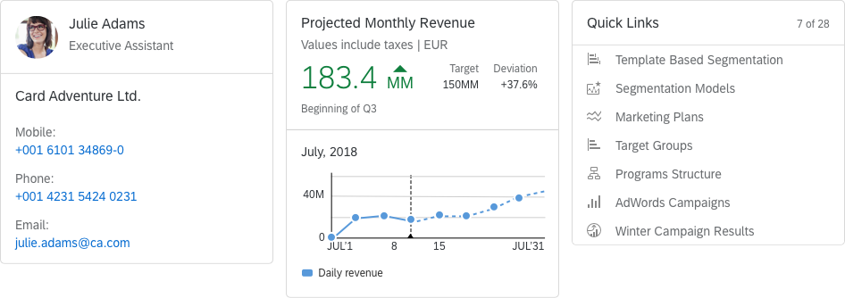
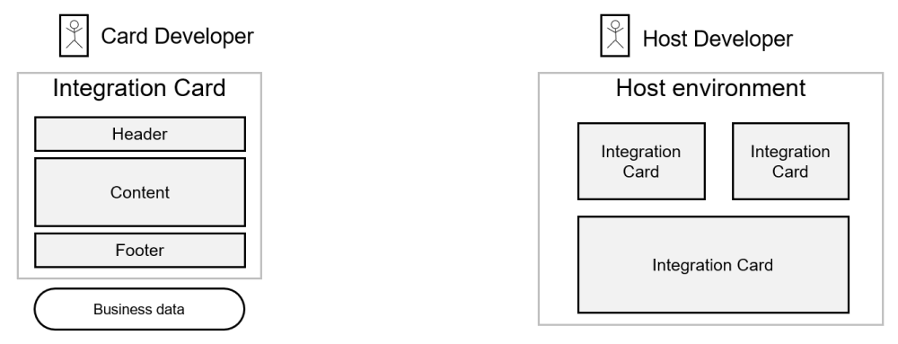

Integration Cards Overview

Integration cards present a new means to expose application content to the end user in a unified way.
Depending on the use cases cards can be easily embedded in a host environment, such as application,
dashboard, or any HTML page.
A variety of card types can be configured by a simple JSON configuration (schema) without the need to write
code for UI rendering.
In this way, even users without programming skill are being enabled to create new cards according to their
special needs.
Before going further with Integration cards you can check this General UI5 Cards Overview which contains more information about different card controls and concepts available in UI5.
Card Configuration
The Card Developer creates a declarative manifest file in JSON format. This file holds a description of the card configuration settings like destinations, parameters, filters, and action handlers. Read more about Card Configuration. Additionally, the Card Developer specifies which configuration elements will be available for further adaptation by Administrators and Page/Content Administrators using the Configuration Editor.Host Environment
Host Environment is where the card is integrated. There are two ways of integration: as a Custom Element or as a UI5 Control. The Host Developer can define action event handler to react on user interactions within the card, resolves destinations, provides parameters and takes care for the layout and sizing. Read more about responsibilities of the host environment.UX Concept
- Cards are representations of an app or page and offer content to users in a specific context.
- Cards contain a certain set of information from an app or page and can also offer functionality.
- Cards can be a mash-up of multiple apps (such as a list card with links).
- An app or page can be represented by one card, or by multiple cards that each expose different aspects.
- Users get direct insights without leaving the current screen, while cards can still offer further navigation options.
- Cards are composite controls that follow a predefined structure.
Cards consist of:
- A card container - includes a background and a border that hold the header and the content.
- A header - it can have a title, a subtitle, an icon, and a status. If the header is of type Numeric, it may have different attributes describing numeric indicator, such as KPI.
- Content - depends on the card type.
Characteristics
- Technology agnostic - Different technologies can easily parse the manifest.json file and render a card based on it.
- Self-contained - Everything needed to render the card and make it actionable is described in the manifest.json (including data and functionality).
- Reusable - The manifest.json can be easily parsed, processed, and saved in different layers of an application. It is also easily shareable.
Developing Cards
To develop a card you should create a manifest.json file that stores all configurations (card structure, data, functionality, etc...). The sap.card is the namespace responsible for the card configuration inside the manifest file. Read more about Card Types.
You can check the References section for links to additional resources about cards, like the API Reference and the JSON schema.